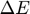
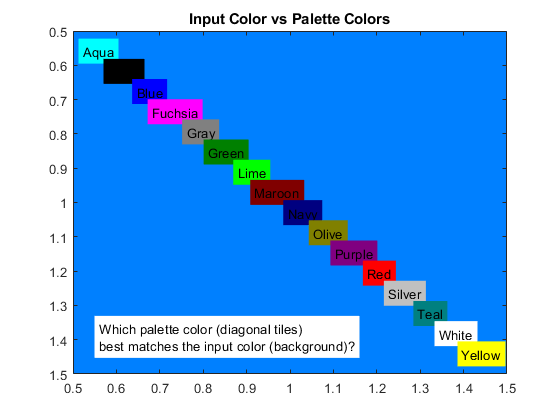
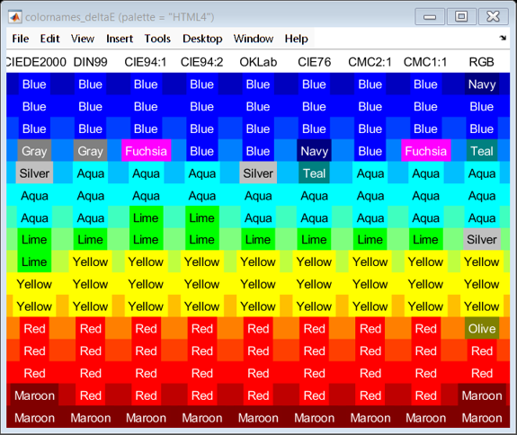
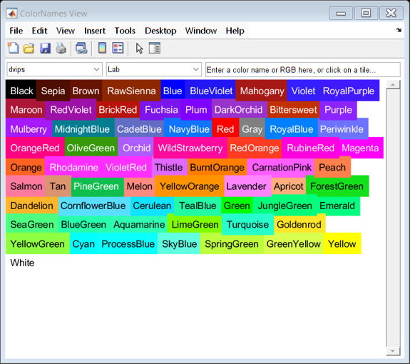
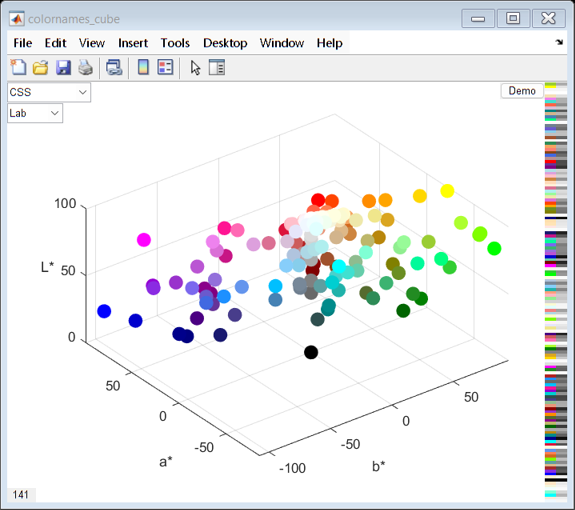
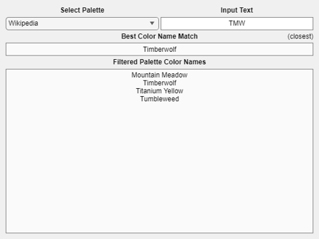

COLORNAMES Examples
The function COLORNAMES matches the input RGB values or input color names to the closest colors from the selected palette. COLORNAMES always returns the same outputs, regardless of whether matching RGB or names:
[names,RGB] = colornames(palette,RGB) [names,RGB] = colornames(palette,names)
This document shows some examples of using COLORNAMES to match RGB values or color names, and example usage of the bonus functions.
Contents
- Palette Descriptions
- Return Palette Names
- Return All Color Names and RGB Values for One Palette
- Match Exact Color Names
- Match Closest Color Names
- Match Index Number
- Match Initial Letter
- Match Diacritics
- Match RGB
- Match RGB, Selecting the Color Difference Metric
- BONUS: View the Color Difference in a Figure
- BONUS: View the Palette Colors in 2D
- BONUS: View the Palette Colors in 3D
- BONUS: Interactive Name Search (R2023b or later)
- BONUS: Add A New Palette
- Unmatched Input Name Error
Palette Descriptions
Palettes of named colors have been defined by various people and groups, often intended for very different applications. COLORNAMES supports a wide selection of common color palettes: a detailed list of the supported palettes is printed in the command window by simply calling COLORNAMES with no input arguments and no output arguments:
colornames()
Alphabet 26 An alphabet of 26 clearly distinguishable colors, by Paul Green-Armytage.
Source: https://www.aic-color.org/resources/Documents/jaic_v5_06.pdf
AmstradCPC 27 Amstrad Colour Personal Computer (CPC) with 27 named colors.
Source: http://www.cpcwiki.eu/index.php/CPC_Palette
AppleII 16 The main 16 colors provided by Apple II's Master Color Values.
Source: http://www.1000bit.it/support/manuali/apple/technotes/iigs/tn.iigs.063.html
Bang 678 Per Bang's 678 systematically derived RGB color names, V2.
Source: http://www.procato.com/rgb+index/?csv
BS381C 97 British Standard 381C colors. Used in identification, coding, and other special purposes.
Source: http://www.e-paint.co.uk/BS381 Colourchart.asp
CGA 16 The main 16 colors provided by IBM's first graphics card, the Color Graphics Adapter.
Source: https://en.wikipedia.org/wiki/Color_Graphics_Adapter
Crayola 222 All simple colors listed on the Crayola website (excludes metallic, glitzer, gel fx).
Source: http://www.crayola.com/explore-colors/
CSS 141 W3C's Cascading Style Sheets language colors (also used by HTML and XUL).
Source: https://drafts.csswg.org/css-color/#named-colors
dvips 68 LaTeX Device Independent file to Post-Script conversion program's supported color names.
Source: <texmf>\dvips\base\color.pro
FarrowBall 156 All 156 paint colors listed on the Farrow & Ball website.
Source: https://www.farrow-ball.com/paint-colours
Foster 870 John Foster's summary of Nathan Maroney's "Color Naming Experiment" data.
Source: http://people.csail.mit.edu/jaffer/Color/CNE-2007.txt
HTML4 16 HyperText Markup Language version 4.01 Basic color keywords.
Source: http://www.w3.org/TR/REC-html40/types.html#h-6.5
ISCC 267 All colors of the ISCC-NBS System of Color Designation, adjusted for RGB.
Source: https://www.w3schools.com/colors/colors_nbs.asp
Kelly 22 Approximations of Kenneth L. Kelly's 22 colors of maximum contrast.
Source: http://www.iscc.org/pdf/PC54_1724_001.pdf
LeCorbusier 63 The 63 architectural colors in Le Corbusier's color system.
Source: https://www.lescouleurs.ch/fr/les-couleurs/63-couleurs
MacBeth 24 MacBeth ColorChecker chart of 24 colors (converted to sRGB).
Source: http://xritephoto.com/documents/literature/en/ColorData-1p_EN.pdf
MATLAB 8 MATLAB's eight standard named colors.
Source: http://www.mathworks.com/help/matlab/ref/colorspec.html
Natural 6 The Natural Color System's six base colors.
Source: https://en.wikipedia.org/wiki/Natural_Color_System
OsXCrayons 48 Apple Macintosh OS X ColorPicker's 48 crayon colors.
Source: http://www.randomactsofsentience.com/2013/06/os-x-crayon-color-hex-table.html
PicoMiteVGA 16 The 16 RGB121 colors generated by the PicoMite VGA, developed by Goeff Graham: https://geoffg.net/picomitevga.html.
Source: https://www.siliconchip.com.au/Issue/2022/July/VGA+PicoMite
PptHighlight 15 Microsoft PowerPoint's 15 text highlighting colors.
Source: PowerPoint
PptStandard 10 Microsoft PowerPoint's 10 standard format colors.
Source: PowerPoint
PWG 57 Colornames defined in Table 2 of the Printer Working Group standard PWG 5101.1.
Source: https://ftp.pwg.org/pub/pwg/candidates/cs-pwgmsn20-20130328-5101.1.pdf
R 549 The colors used in R's colors() vector (these are the X11 colors).
Source: C:\Program Files\R\rw<version>\etc\rgb.txt
RAL 213 All 213 RAL CLASSIC colors, converted to RGB by RAL.
Source: http://www.ral-farben.de/content/application-help/all-ral-colours-names/overview-ral-classic-colours.html
Resene 3132 Resene's own RGB values for their "Total Colour System" paints (2010).
Source: www.resene.co.nz/swatches/download_pencils.xls
Resistor 13 Resistor colors specified by IEC 60062:2016.
Source: https://en.wikipedia.org/wiki/Electronic_color_code
SherwinWilliams 1535 Sherwin-Williams' own list of paint colors.
Source: https://images.sherwin-williams.com/content_images/sw-pdf-sherwin-williams-color.pdf
SVG 140 Scalable Vector Graphics 1.1 color keyword names. Website accessed: 2023-01-03.
Source: https://www.w3.org/TR/SVG11/types.html#ColorKeywords
Tableau 10 Classic Tableau. This is also MatPlotLib's default axes prop_cycle (i.e. line color order), named here: https://matplotlib.org/gallery/color/named_colors.html.
Source: https://public.tableau.com/profile/chris.gerrard#!/vizhome/TableauColors/ColorPaletteswithRGBValues
Thesaurus 240 Ingrid Sundberg's collection of color "synonyms", with a focus on literature.
Source: http://ingridsundberg.com/2014/02/04/the-color-thesaurus/
Trubetskoy 22 Sasha Trubetskoy's complete list of 20 simple and visually distinct colors, plus black and white.
Source: https://sashat.me/2017/01/11/list-of-20-simple-distinct-colors/
Wada 159 The 159 colors used in Wada Sanzō's book "A Dictionary of Color Combinations".
Source: https://sanzo-wada.dmbk.io/
Werner 110 "Werner's Nomenclature of Colours" is a book of samples first published in 1814.
Source: https://www.c82.net/werner/#about
Wikipedia 879 Wikipedia's own list of articles on colors. Website accessed: 2023-01-03.
Source: https://en.wikipedia.org/wiki/Lists_of_colors
Wolfram 24 Wolfram's classic colors for Mathematica. Newer versions use W3C colors.
Source: http://reference.wolfram.com/language/guide/Colors.html
X11 549 X Window System color names (version 1.2), usually found in <X11root>/lib/X11/rgb.txt. Is used for GNU Emacs, and is the basis of the W3C colorscheme (with some modifications).
Source: http://cvsweb.xfree86.org/cvsweb/*checkout*/xc/programs/rgb/rgb.txt?rev=1.2
xcolor 19 LaTeX package to support colors in documents, all supported color names.
Source: <texmf>\tex\latex\xcolor\xcolor.sty
xkcd 949 Color names chosen by internet survey participants. The survey is described and analyzed here: http://blog.xkcd.com/2010/05/03/color-survey-results/ . Some names may not be suitable for work!
Source: http://xkcd.com/color/rgb.txt
Return Palette Names
To return a cell array of the supported palettes simply call COLORNAMES with no input arguments and one output argument:
palettes = colornames()
palettes =
39×1 cell array
{'Alphabet' }
{'AmstradCPC' }
{'AppleII' }
{'Bang' }
{'BS381C' }
{'CGA' }
{'Crayola' }
{'CSS' }
{'dvips' }
{'FarrowBall' }
{'Foster' }
{'HTML4' }
{'ISCC' }
{'Kelly' }
{'LeCorbusier' }
{'MacBeth' }
{'MATLAB' }
{'Natural' }
{'OsXCrayons' }
{'PicoMiteVGA' }
{'PptHighlight' }
{'PptStandard' }
{'PWG' }
{'R' }
{'RAL' }
{'Resene' }
{'Resistor' }
{'SherwinWilliams'}
{'SVG' }
{'Tableau' }
{'Thesaurus' }
{'Trubetskoy' }
{'Wada' }
{'Werner' }
{'Wikipedia' }
{'Wolfram' }
{'X11' }
{'xcolor' }
{'xkcd' }
Return All Color Names and RGB Values for One Palette
Simply call COLORNAMES with the name of the required palette. If the palette name is string then the color names will be a string array, otherwise the color names will be a cell array of character vectors.
[names,rgb] = colornames("MATLAB")
names =
8×1 string array
"Black"
"Blue"
"Cyan"
"Green"
"Magenta"
"Red"
"White"
"Yellow"
rgb =
0 0 0
0 0 1
0 1 1
0 1 0
1 0 1
1 0 0
1 1 1
1 1 0
Match Exact Color Names
COLORNAMES attempts to match each input name to a color name from the specified palette. Note that CamelCase signifies separate words (for some palettes space characters may be significant, e.g. Foster and xkcd ).
The input names may supplied as either:
- one array (either a string array or a cell array of character vectors)
- separate input arguments (string scalars or character vectors)
[names,rgb] = colornames("xkcd",["red","green","blue"]) [names,rgb] = colornames("xkcd",'eggshell',"eggShell")
names =
3×1 string array
"Red"
"Green"
"Blue"
rgb =
0.89804 0 0
0.082353 0.6902 0.10196
0.011765 0.26275 0.87451
names =
2×1 string array
"Eggshell"
"Egg Shell"
rgb =
1 1 0.83137
1 0.98824 0.76863
Match Closest Color Names
If COLORNAMES cannot match the input name exactly then COLORNAMES attempts to find the closest color name using these two steps:
- the palette names are filtered for only those color names that contain every character of the input name (note that the characters must be in the same order, but are not required to be consecutive),
- the shortest Levenshtein distance is used to select the best matching name from the filtered list.
colornames('wikipedia','azu()','azweb','azure X11','azurex','zx')
ans =
5×1 cell array
{'Azure (X11/Web Color)'}
{'Azure (X11/Web Color)'}
{'Azure (X11/Web Color)'}
{'Azure (X11/Web Color)'}
{'Azure (X11/Web Color)'}
Match Index Number
Palettes with a leading index number may be matched by just the number, or just the name, or both together (as given in the palette color names array):
colornames("CGA",'9','LightBlue','lightblue','9 Light Blue','9lightblue')
ans =
5×1 string array
"9 Light Blue"
"9 Light Blue"
"9 Light Blue"
"9 Light Blue"
"9 Light Blue"
Match Initial Letter
Palettes Alphabet, MATLAB, and Natural also match the initial letter to the color names (except for 'Black' which is matched by 'K'):
colornames("MATLAB","c","m","y","k")
ans =
4×1 string array
"Cyan"
"Magenta"
"Yellow"
"Black"
Match Diacritics
Letters with diacritics will be matched with or without the diacritic:
colornames('SherwinWilliams','Jalapeño','Jalapeno','Rosé','Rose')
ans =
4×1 cell array
{'6629 Jalapeño'}
{'6629 Jalapeño'}
{'6290 Rosé' }
{'6290 Rosé' }
Match RGB
Each provided RGB triple is matched to the closest RGB triple from the requested palette:
[names,rgb] = colornames('HTML4', [0,0.2,1;1,0.2,0])
names =
2×1 cell array
{'Blue'}
{'Red' }
rgb =
0 0 1
1 0 0
Match RGB, Selecting the Color Difference Metric
Input RGB values are matched using one of several standard, well defined color difference metrics known as  or deltaE. The default deltaE is "CIE94:2", which provides good matching for most palettes and colors. Other deltaE calculations can be selected by using the third input argument:
rgb = [0,0.5,1]; % input RGB tmp = {'CIEDE2000','CIE94:1','CIE94:2','CIE76','DIN99','CMC2:1','CMC1:1','RGB'}; tmp(2,:) = cellfun(@(de) colornames('HTML4',rgb,de), tmp); fprintf('%13s %s\n',tmp{:}) % Show the input color: image(reshape(rgb,1,1,3)) % Overlay all HTML4 palette colors: [names,rgb] = colornames('HTML4'); X = linspace(0.5,1.5,2+numel(names)); X = num2cell(X(2:end-1)); F = @(x,y,n,c)text(x,y,n,'BackgroundColor',c,'HorizontalAlignment','center'); cellfun(F, X(:),X(:),names(:),num2cell(rgb,2)) title('Input Color vs Palette Colors') text(X{1},X{end},{'Which palette color (diagonal tiles)',... 'best matches the input color (background)?'},... 'BackgroundColor',[1,1,1], 'VerticalAlignment','bottom')
CIEDE2000 Gray
CIE94:1 Fuchsia
CIE94:2 Blue
CIE76 Navy
DIN99 Gray
CMC2:1 Blue
CMC1:1 Fuchsia
RGB Teal
 BONUS: View the Color Difference in a Figure
The bonus function COLORNAMES_DELTAE demonstrates how the different deltaE metrics match the provided RGB to the palette colors. Simply select the palette, provide an Nx3 RGB colormap, and all deltaE metrics are listed with the matched colors displayed in the columns below:
colornames_deltaE('HTML4',jet(16))
 BONUS: View the Palette Colors in 2D
The bonus function COLORNAMES_VIEW plots the palettes in a figure. Drop-down menus select the palette, and also how the colors are sorted. Click on any color to view its hex RGB value (value may be approximate).
colornames_view('dvips','Lab')
BONUS: View the Palette Colors in 3D
The bonus function COLORNAMES_CUBE plots the palettes in a figure. The data cursor can be used to view the color names, by clicking on the nodes. Drop-down menus select the palette and the color space of the colorcube:
colornames_cube('CSS','Lab')
BONUS: Interactive Name Search (R2023b or later)
The bonus function COLORNAMES_SEARCH is an interactive tool showing the input color name matching in real-time as you type. For example, here it shows the filtered palette colornames that contain the characters 'TMW' (must in that order, but are not required to be consecutive):
colornames_search('Wikipedia','TMW')
BONUS: Add A New Palette
Adding a new color palette to the tool is easy: simply append a suitably- named scalar structure to COLORNAMES.MAT (by calling SAVE() with the -APPEND option). The structure must contain the following two fields:
- names : an Nx1 cell array of character vectors, either written as space-separated initial-capitalized words or in CamelCase.
- rgb : an Nx3 numeric matrix of the corresponding RGB values. The values must range from zero to one for double/single arrays and from zero to INTMAX() for integer arrays.
and optionally also include any of the following fields:
- license : CharVector, the license information for the palette.
- source : CharVector, a reference of the origin (e.g. URL).
- notes : CharVector, a short description of the palette.
- index : LogicalScalar, where TRUE specifies that the colornames have a leading index number. If index is not provided then it will be automagically determined from names.
Unmatched Input Name Error
If an input name cannot be matched to a palette color name then COLORNAMES will throw an error. It displays a short list of palette color names that are similar to the input name:
colornames('HTML4', 'Bleu', 'Blanc', 'Rouge')
Error using colornames>cnNoMatch (line 428)
Palette "HTML4" does not contain these colors: "Bleu", "Blanc", "Rouge".
Palette color names that are similar to the requested names:
Bleu -> "Blue", "Black", "Red", "Aqua", "Gray", "Green", "Lime".
Blanc -> "Black", "Blue", "Gray", "Lime", "Navy", "Olive", "Teal".
Rouge -> "Blue", "Aqua", "Lime", "Olive", "Red", "White", "Black".
Call COLORNAMES("HTML4") to list all color names for that palette,
or COLORNAMES_VIEW("HTML4") to view the palette in a 2D list,
or COLORNAMES_CUBE("HTML4") to view the palette in a 3D cube,
or COLORNAMES_SEARCH("HTML4") to interactively search for color names.
Error in colornames (line 369)
cnNoMatch(cnc,exa,pnc{idp},nin(nm0),match(nm0))
^^^^^^^^^^^^^^^^^^^^^^^^^^^^^^^^^^^^^^^^^^^^^^^
Error in colornames_doc (line 132)
colornames('HTML4', 'Bleu', 'Blanc', 'Rouge')
^^^^^^^^^^^^^^^^^^^^^^^^^^^^^^^^^^^^^^^^^^^^^